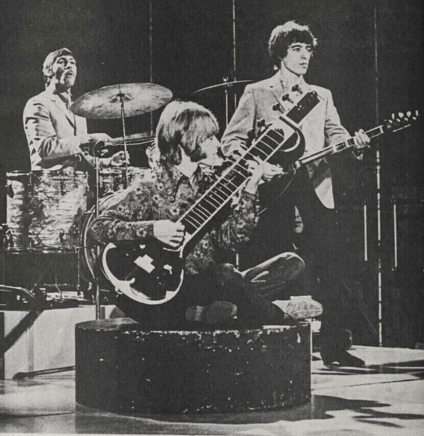

The Paint It Black Stones session almost produced a completely different song.
It started as a slower, more traditional track.
A studio joke and a brand-new sitar turned it into one of the darkest number ones of the decade.

Table of Contents
- How the Song Started as Something Slower
- Brian Jones and the Sitar That Changed Everything
- A Sitar Song That Topped the Charts Twice
- FAQ
How Paint It Black Stones Started as Something Slower
Mick Jagger and Keith Richards wrote the song for the Rolling Stones' Aftermath album.
The earliest version in the studio was slower and more conventional.
An Organ Joke That Became a Rhythm
Bassist Bill Wyman started fooling around on the studio organ during a break.
He played it in a style that mimicked Jewish wedding music, half as a joke.
Drummer Charlie Watts and co-manager Eric Easton joined in, building a faster, double-time rhythm around it.
What began as messing around became the song's hypnotic pulse.
Brian Jones and the Sitar That Changed Everything
Brian Jones had recently heard George Harrison play sitar on The Beatles' "Norwegian Wood."
Roughly a week later, during the same Aftermath sessions, road manager Ian Stewart got Jones a sitar of his own.
Studying Under a Sitar Virtuoso
Jones began studying the instrument under sitar player Harihar Rao.
He worked its droning, exotic tone directly into the song's arrangement.
The combination of sitar and the band's new double-time rhythm gave the track its unmistakable, unsettled feel.
A Sitar Song That Topped the Charts Twice
The Rolling Stones recorded the song at RCA Studios in Hollywood between March 6 and 9, 1966.
It was released as a single on May 13, 1966.
"Paint It Black" became the first song featuring a prominent sitar to reach number one in both the US and UK.
That crossover helped introduce the instrument to a mainstream rock audience and fed directly into the psychedelic sound taking shape that year.
The lyrics read like a funeral procession, a line of black cars and flowers for a lover who isn't coming back.
Against Watts's driving rhythm, that bleak imagery hit harder rather than softer.
The title itself has a small mystery attached to it.
Early pressings printed it as "Paint It, Black," with a comma that most sources now treat as a simple printing error rather than an intentional part of the title.
FAQ
Who wrote it?
Mick Jagger and Keith Richards wrote it.
The Rolling Stones recorded it at RCA Studios in Hollywood between March 6 and 9, 1966.
Why does it have a sitar?
Brian Jones had just gotten his own sitar after hearing George Harrison play one on The Beatles' "Norwegian Wood."
He worked it into the song.
Was it originally a joke?
The song started as a slower, more traditional track.
Bill Wyman began playing the organ in a style that mimicked Jewish wedding music, and the faster rhythm grew from there.
How did it perform on the charts?
It became the first song featuring a prominent sitar to reach number one in both the US and UK.
It was released as a single on May 13, 1966.
What started as a studio joke became one of The Rolling Stones' darkest and most influential singles.
It's a defining record of the British Invasion & Beat Music era's turn toward the psychedelic.
Back to the 1960smusic.net homepage to explore every genre of the decade, starting with the Paint It Black Stones story itself.